Week 5: Surveys
Topics for today
This week we’re going to be discussing surveys and wrangling survey data in R.
The goals for the lecture section of today is as follows:
Identify what makes effective surveys
Correctly identify if data is “long” or “wide”
Understand how to use the {tidyr} pivot functions for moving between “wide” and “long” data
Understand how to use the tidyverse for common data wrangling tasks when working with survey data
We’ll likely continue some of the lecture material into the workshop.
Surveys are an indispensible part of healthcare
There are lots of absolute quantitative measures in healthcare [datascience]
Patient wait times
Morbidity
Biological samples
Physiological health measurements
Device-based measurements
Anthropometric measurements
Sensory measurements
But these measures on there own are often meaningless…
… for understanding patient experiences
… for tracking patient outcomes
… for medical trials
… for designing medical devices
We need to understand these measures in context of the patient/device/intervention.
Surveys are an indispensible part of healthcare
Surveys are an indispensible part of healthcare
Surveys might be the sole measurement we take in a study.
NHS patient experience surveys
“The importance of urban natural areas and urban ecosystem services during the COVID-19 pandemic”1.
How successful do medical technology companies rate their devices2?
Surveys might instead provide additional context for other measurements that we take.
Diet studies might take biological samples but require food surveys
Mental health studies might track physiological measurements as well as psychological surveys
Designing effective surveys is hard
We don’t have enough time to go deep into how to design an effective survey - that’s probably an entire undergraduate course in its own right.
So why are we looking at surveys?
Designing effective surveys is hard
There are some specific topics in designing surveys I want to cover.
These “tips” are geared towards designing surveys where you can easily analyse the data after running the survey.
However. These tips do not ensure an effective survey.
In an effective survey:
There is an overall goal for the survey.
Each question is asking what you think it’s asking.
Questions are unbiased and are not leading.
The best way to test the effectiveness of your survey is pretesting3
Designing effective surveys is hard
Getting survey data into R for analysis requires many different data wrangling tasks/skills.
The tidyverse gets its name from the concept of “tidy data” defined by Hadley Wickham4 back in 2014.
We will use survey data as an introduction to this concept and will cover 4 types of wrangling:
Pivoting data between wide and long formats
Joining datasets [in the same way that SQL databases are joined]
Wrangling survey questions with multiple choices
Wrangling survey questions that capture multiple pieces of information
Quantitative vs Qualitative measurements?
“Closed question” vs “Open question”?
Which is which?
Surveys can capture all sorts of data
Quantitative measurements can be collected with closed-ended questions.
Do you own a fitness tracking device
- Yes / No
How often do you wear your tracking device
- Every day / Some days / A few days / Rarely
Since owning a tracking device do you feel like you know more about your activity?
- Strong agree / Agree / Neither agree nor disagree / Disagree / Strong disagree
Qualitative measurements are collected using open-ended questions - or free-text fields.
If you were to recommend device X what would you tell someone?
Surveys can capture all sorts of data
Ideally we would always use closed-form questions to capture quantitative information. But unfortunately this isn’t always the case. Take this question from the 2019 British Election Survey5:
Question text: “Where do you get most of your information about politics or current affairs from?”
Question input type: free-form text
Example responses:
“Media- cross referencing and watching parliamentary debates”
“News, internet and conversation”
“t v . papers. radio.”
“news channels on tv”
“Television news, online, family, news on the radio.”
“Television news, newspapers.”
What do you think about this question?
Survey Mode
Methods of survey data collection (I)
There are lots of different methods/modes for survey data collection:
Online (open/close)
Telephone
Mail
Face-to-face
Paper (observed)
Mixed-mode
Same survey different modes
Multi-phase survey with different modes
There is considerable evidence for mode of data collection affecting survey results7:
Respondents answer questions differently by mode8
Respondent demographics vary by mode and survey topic
Inaccurate state-level polls forn the 2016 US elections are considered to have been strongly biased by an over-representation of college graduates9.
Survey Size
Survey Size
Many survey tools provide interactive calculators for estimating survey population requirements - surveymonkey.com/mp/sample-size-calculator.
LIKERT Scales (I)
In a LIKERT scale responses are given a score.
| response | response_score |
|---|---|
| Strong disagree | 1 |
| Disagree | 2 |
| Neutral | 3 |
| Agree | 4 |
| Strong agree | 5 |
| question | response_score |
|---|---|
| Feel confident in {ggplot2}? | Strong agree |
| Feel confident in {dplyr}? | Neutral |
| Feel confident in {tidyr}? | Disagree |
| Feel confident in {purrr}? | Strong disagree |
It is absolutely meaningless to take the mean of a LIKERT scale13 - but people still do it.
When you create your survey question you’re creating an ordinal variable
LIKERT Scales (II)
| response | response_score |
|---|---|
| Strong disagree | 1 |
| Disagree | 2 |
| Neutral | 3 |
| Agree | 4 |
| Strong agree | 5 |
| question | response_score |
|---|---|
| Feel confident in {ggplot2}? | Strong agree |
| Feel confident in {dplyr}? | Neutral |
| Feel confident in {tidyr}? | Disagree |
| Feel confident in {purrr}? | Strong disagree |
Our original question defines an ordinal variable - there’s an intrinsic order to the responses.
When we convert the question to a LIKERT score we are then working with a interval data.
But is this accurate?
Is the distance between “Strong disagree” and “Disagree” the same as that between “Neutral” and “Agree”?
LIKERT Scales (III)
| response | response_score |
|---|---|
| Strong disagree | 1 |
| Disagree | 2 |
| Neutral | 3 |
| Agree | 4 |
| Strong agree | 5 |
| question | response_score |
|---|---|
| Feel confident in {ggplot2}? | Strong agree |
| Feel confident in {dplyr}? | Neutral |
| Feel confident in {tidyr}? | Disagree |
| Feel confident in {purrr}? | Strong disagree |
If you want to compare answers across multiple LIKERT scales then there is some meaning to the “median” response.
You could perform factor analysis - which is well explained by Batterton and Hale14.
When designing your survey you could also directly ask respondents a question instead of trying to guess what “disagree” + “neutral” means.
Overall, do you feel confident with using the tidyverse?
Missing data in surveys
Missing data in surveys (I)
When designing a survey we ideally want respondents to answer all questions.
Missing data in surveys: MNAR
There are three different kinds of missing data distribution:
- Missing Not at Random (MNAR)
Missing at Random (MAR)
Missing Completely at Random (MCAR)
Missingness is related to what is missing.
Missingess of responses might be related to question order - respondents give up.
Missingness might be due to respondent’s feeling towards questions [eg extra-marital relations, triggering subjects]
Data that’s MNAR indicates a bias in your study design.
However - it’s often difficult to determine if your data is indeed MNAR or not.
Missing data in surveys: MAR
There are three different kinds of missing data distribution:
- Missing Not at Random (MNAR)
- Missing at Random (MAR)
- Missing Completely at Random (MCAR)
Missingness is not random but can be accounted for by other variables/ We could call this “conditionally at random”.
Survey abandonment could be modelled by including information about question order.
Missingness might be due to known differences in demographics, for instance males are less likely to complete depression surveys.
Data that’s MAR provides us with a methodology for imputing missing values.
Missing data in surveys: MCAR
There are three different kinds of missing data distribution:
Missing Not at Random (MNAR)
Missing at Random (MAR)
- Missing Completely at Random (MCAR)
Missingness is truly randomly distributed in the dataset. There are no hidden variables.
In practice it is hard to verify MCAR over MNAR without specifically designing your study for randomness.
- Randomly sampling a subset of questions for each partipant.
Planned missingness designs16 depend on fairly advanced statistical methodologies.
Survey tools
Survey tools
There’s a plethora of survey tools available.
Many of these tools provide free tiers but require subscriptions/licenses for wide scale use [and for GDPR compliance].
One thing that unifies all of these tools is that each one has it’s own unique data export format - irrespective of file format.
Let’s look at this first and then talk about file formats
Google Forms
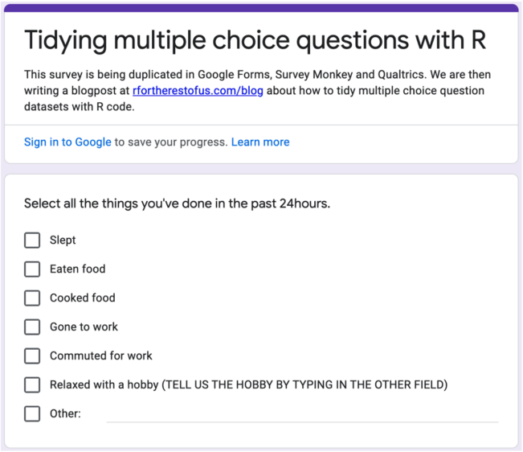
Survey Monkey
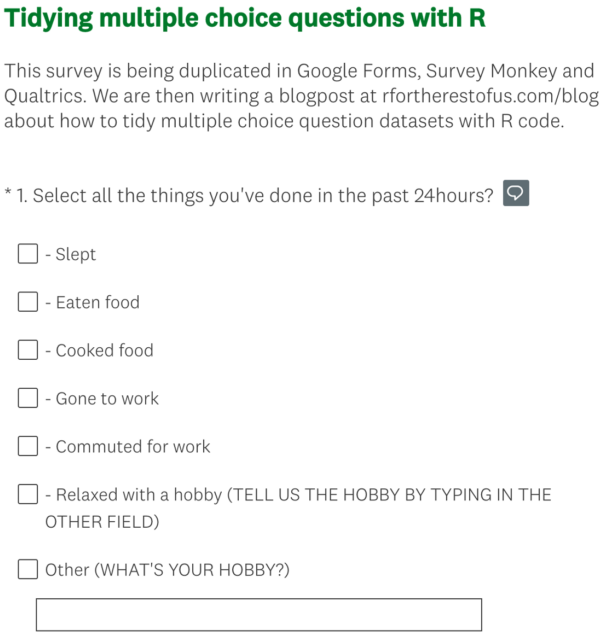
Qualtrics
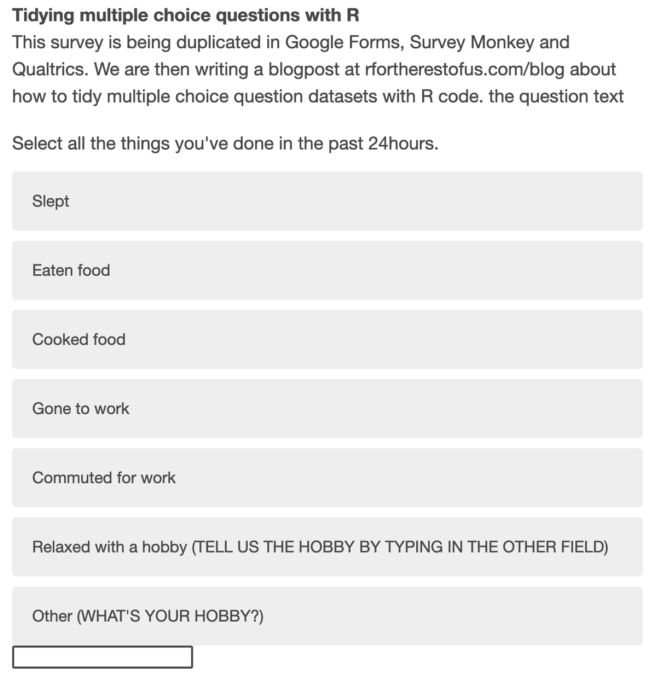
Google Forms
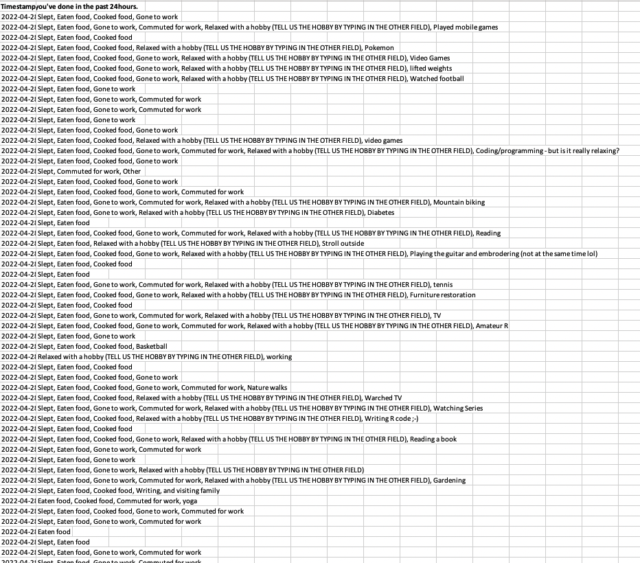
Survey Monkey
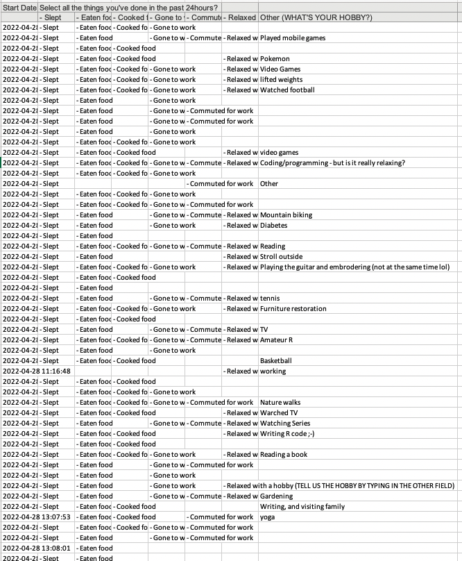
Qualtrics
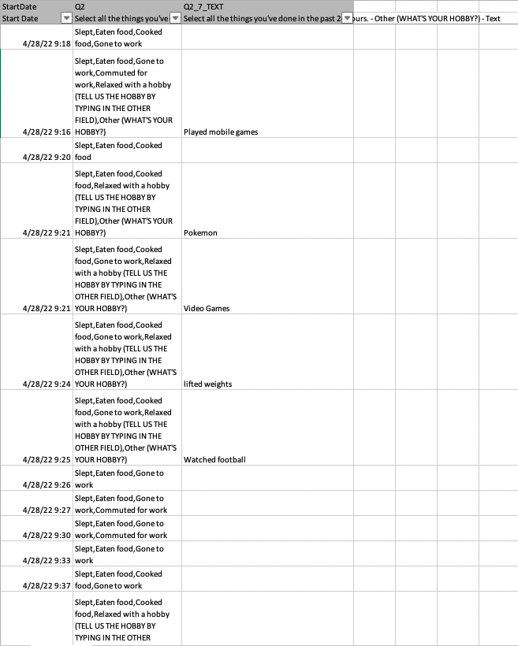
Survey tools/software
Because there’s such a huge variety in data export format for survey data it’s important to train your general purpose data wrangling skills.
In the lecture we’ll look at several real-world datasets that require lots of complicated wrangling.
In the workshop you’ll look at simpler datasets and practice the same wrangling skills you’ll learn now.
Survey file formats
Excel files: Almost all tools will provide .xlsx files. However, there’s a vast range of options in how the data is arranged - including a separate sheet for each question.
We use the {readxl} package for reading in these files
If data is encoded with cell colour you’ll need to use the more complex {tidyxl} package.
.csv files: Most tools provide a .csv export, .csv files are an example of a “flat” or “plain text” file. They’re likely to be well formatted for reading into R.
- Flat files like .csv are read into R with the {readr} package
SPSS files: SPSS is a popular tool for designing and analysing survey data, however it’s popularity is waning. These file formats contain richer information than .xslx or .csv
SAS files: SAS is in many ways similiar to SPSS.
- The {haven} package allows us to read and process both SPSS and SAS files.
Survey datasets for today
Survey datasets (I)
We’ll be looking at 3 different datasets during this week:
Emerging Adulthood Measured at Multiple Institutions data set17
This is the 2nd instance of a large scale survey across multiple institutions.
Learn about the 1st instance (and how the study works) from Reifman and Grahe18.
The actual survey questionnaire is available here osf.io/3zq5e
The survey dataset is stored on OSF.com as a collection19
The actual survey data is available from osf.io/download/c3pf6 and can be downloaded via a URL.
Survey datasets (II)
We’ll be looking at 3 different datasets during this week:
- Emerging Adulthood Measured at Multiple Institutions data set17
Public Attitudes to Commercial Access to Health Data20
Survey datasets (II)
We’ll be looking at 3 different datasets during this week:
British Election Study 2019
Since 1964 a post-election survey has been carried out to understand electoral motivations and the impact of political party campaigning.
Data for all surveys is available from britishelectionstudy.com/data-objects/cross-sectional-data/
The 2019 questionnaire and information on how it was rolled out is britishelectionstudy.com/data-object/2019-british-election-study-post-election-random-probability-survey/22.
The 2019 survey data is available from the UK Data Service5 but must be manually added to your UK Data Service account.
Survey datasets (IV)
We’ll be looking at 3 different datasets during this week:
Emerging Adulthood Measured at Multiple Institutions data set17
Public Attitudes to Commercial Access to Health Data20
British Election Study 2019
📝 Task: Setup our project
SLIDE 1 OF 3
Create a new project called
eng7218-week-5_surveysAdd a subfolder called
datato store the datasets.Create a separate
.Rmddocument for each of the studies:
emerging-adulthood.Rmdcommercial-access-to-health-data.Rmdbritish-election-study-2019.Rmd
📝 Task: Obtain Emerging Adulthood data
SLIDE 2 OF 3
1. Open the emerging-adulthood.Rmd file
There are two important files from https://osf.io/qtqpb/19 that we need:
The codebook
The dataset
2. Add a code chunk to load the {tidyverse} and {readxl} packages.
3. Add this code chunk to your .Rmd to download these files
📝 Task: Read in Emerging Adulthood data
SLIDE 3 OF 3
When we read in datasets we should always assume they need cleaning, so let’s import these files with object names that indicate this.
Messy column names (I)
Most datafiles you’ll work with will have messy column names that are annoying to work with:
Rows: 328
Columns: 6
$ `Variable Name` <chr> "StartDate", "EndDate", "Status", "Progress", "Du…
$ `Question text` <chr> "Start Date", "End Date", "Response Type", "Progr…
$ ...3 <chr> "n/a", "n/a", "n/a", "n/a", "n/a", "n/a", "n/a", …
$ responses <chr> "qualtrics variable", "qualtrics variable", "qual…
$ ...5 <lgl> NA, NA, NA, NA, NA, NA, NA, NA, NA, NA, NA, NA, N…
$ `Survey Question ID` <chr> "{\"ImportId\":\"startDate\"}", "{\"ImportId\":\"…The easiest way to solve this is with the clean_names() function from the {janitor} package.
Messy column names (II)
But let’s understand how these two datasets relate to one another.
The Variable Name column of adulthood_raw_codebook contains the exact column names from adulthood_raw_data.
If we clean up the names of adulthood_raw_data these will no longer matchup. So in this instance let’s only clean the codebook column names:
IDEA Questions (I)
Let’s take a look at the these questions from the survey. Could you suggest a way to find these questions in the codebook?
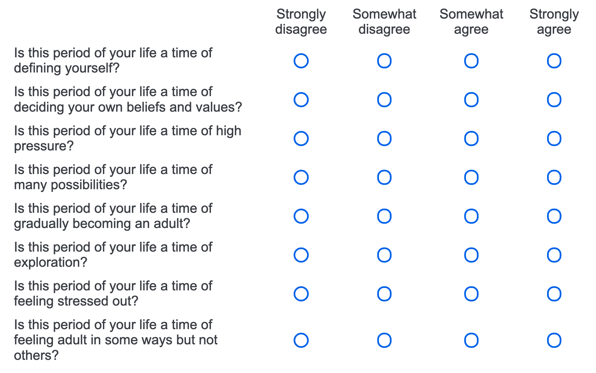
# A tibble: 1 × 6
variable_name question_text x3 respo…¹ x5 surve…²
<chr> <chr> <chr> <chr> <lgl> <chr>
1 IDEA_5 Is this period of your life a time … Thin… 1-stro… NA "{\"Im…
# … with abbreviated variable names ¹responses, ²survey_question_ididea_responses_raw <- adulthood_raw_data %>%
select(ResponseId, starts_with("IDEA_"))
idea_responses_raw# A tibble: 3,182 × 9
ResponseId IDEA_1 IDEA_2 IDEA_3 IDEA_4 IDEA_5 IDEA_6 IDEA_7 IDEA_8
<chr> <dbl> <dbl> <dbl> <dbl> <dbl> <dbl> <dbl> <dbl>
1 R_BJN3bQqi1zUMid3 3 4 4 3 4 4 4 4
2 R_2TGbiBXmAtxywsD 4 4 4 4 3 4 4 4
3 R_12G7bIqN2wB2N65 4 4 4 4 4 4 3 3
4 R_39pldNoon8CePfP 4 4 3 3 4 4 4 4
5 R_1QiKb2LdJo1Bhvv 4 4 3 4 3 3 3 4
6 R_pmwDTZyCyCycXwB 3 4 3 3 4 4 3 2
7 R_2Quh0h3wxTjZjKP 4 3 4 4 3 4 3 3
8 R_2CfdmFw1NTliv4e 4 3 3 4 3 2 2 3
9 R_24kJPxVOxMshN3Q 4 4 3 2 4 4 3 3
10 R_3fv0VeHsW6AvJPk 4 4 2 2 4 4 3 4
# … with 3,172 more rowsIDEA Questions (II)
Can you tell me what “4” means in this dataset?
The adulthood_raw_codebook tells us that “4” encodes “Strong agree”.
We now need a way to transform all of these columns at once - can you suggest one?
There are two methods I can think of:
One method we’ve already used in coding
One method we’ll be introducing today.
| ResponseId | IDEA_1 | IDEA_2 | IDEA_3 | IDEA_4 | IDEA_5 | IDEA_6 | IDEA_7 | IDEA_8 |
|---|---|---|---|---|---|---|---|---|
| R_BJN3bQqi1zUMid3 | 3 | 4 | 4 | 3 | 4 | 4 | 4 | 4 |
| R_2TGbiBXmAtxywsD | 4 | 4 | 4 | 4 | 3 | 4 | 4 | 4 |
| R_12G7bIqN2wB2N65 | 4 | 4 | 4 | 4 | 4 | 4 | 3 | 3 |
| R_39pldNoon8CePfP | 4 | 4 | 3 | 3 | 4 | 4 | 4 | 4 |
| R_1QiKb2LdJo1Bhvv | 4 | 4 | 3 | 4 | 3 | 3 | 3 | 4 |
| R_pmwDTZyCyCycXwB | 3 | 4 | 3 | 3 | 4 | 4 | 3 | 2 |
IDEA Questions (III)
- Using
across()to target multiple columns at once.
- Using
pivot_longer()to transform this from wide to long data.
Using
pivot_longer()has the added benefit of preparing the data for{ggplot2}.
Wide vs long data (I)
In a wide dataset each variable is stored in a unique column.
| Person | Age | Weight | Height |
|---|---|---|---|
| Bob | 32 | 168 | 180 |
| Alice | 24 | 150 | 175 |
| Steve | 64 | 144 | 165 |
However, datasets might be partially wide. For instance, year is spread across multiple columns.
| country | variable | 2000 | 2001 | 2002 |
|---|---|---|---|---|
| UK | Supermarkets | 202 | 206 | 230 |
| UK | Shopping malls | 40 | 42 | 46 |
| US | Supermarkets | 305 | 360 | 380 |
| US | Shopping malls | 80 | 90 | 98 |
In a long dataset each row is a single observation.
| Person | Variable | Value |
|---|---|---|
| Bob | Age | 32 |
| Bob | Weight | 168 |
| Bob | Height | 180 |
| Alice | Age | 24 |
In the tidyverse tidy data4 means long data.
| country | variable | year | value |
|---|---|---|---|
| UK | Supermarkets | 2000 | 202 |
| UK | Supermarkets | 2001 | 206 |
| UK | Supermarkets | 2002 | 230 |
| UK | Shopping malls | 2000 | 40 |
| UK | Shopping malls | 2001 | 42 |
| UK | Shopping malls | 2002 | 46 |
| US | Supermarkets | 2000 | 305 |
| US | Supermarkets | 2001 | 360 |
| US | Supermarkets | 2002 | 380 |
| US | Shopping malls | 2000 | 80 |
| US | Shopping malls | 2001 | 90 |
| US | Shopping malls | 2002 | 98 |
Wide vs long data (II)
The {ggplot2} package requires long data
| country | variable | year | value |
|---|---|---|---|
| UK | Supermarkets | 2000 | 202 |
| UK | Supermarkets | 2001 | 206 |
| UK | Supermarkets | 2002 | 230 |
| UK | Shopping malls | 2000 | 40 |
| UK | Shopping malls | 2001 | 42 |
| UK | Shopping malls | 2002 | 46 |
| US | Supermarkets | 2000 | 305 |
| US | Supermarkets | 2001 | 360 |
| US | Supermarkets | 2002 | 380 |
| US | Shopping malls | 2000 | 80 |
| US | Shopping malls | 2001 | 90 |
| US | Shopping malls | 2002 | 98 |
pivot_wider() and pivot_longer()
The pivot_wider() and pivot_longer() functions are for transforming data to long format and wide format, respectively.
| Person | name | value |
|---|---|---|
| Bob | Age | 32 |
| Bob | Weight | 168 |
| Bob | Height | 180 |
| Alice | Age | 24 |
| Alice | Weight | 150 |
| Alice | Height | 175 |
| Steve | Age | 64 |
| Steve | Weight | 144 |
| Steve | Height | 165 |
Note that we can use any of the tidy selection functions to target our columns.
Pre 2020 there were
spread()andgather(). These functions are still in{tidyr}but are considered superceded by thepivot_*()functions.
IDEA Questions (IV)
We can now transform our actual dataset into long format as follows:
The remaining step is to use the case_when() function [which is newly introduced here]
idea_responses_long <- idea_responses_raw %>%
pivot_longer(starts_with("IDEA_")) %>%
mutate(value = case_when(value == 1 ~ "Strong disagree",
value == 2 ~ "Disagree",
value == 3 ~ "Agree",
value == 4 ~ "Strong agree"))
idea_responses_long %>%
head() %>%
gt()| ResponseId | name | value |
|---|---|---|
| R_BJN3bQqi1zUMid3 | IDEA_1 | Agree |
| R_BJN3bQqi1zUMid3 | IDEA_2 | Strong agree |
| R_BJN3bQqi1zUMid3 | IDEA_3 | Strong agree |
| R_BJN3bQqi1zUMid3 | IDEA_4 | Agree |
| R_BJN3bQqi1zUMid3 | IDEA_5 | Strong agree |
| R_BJN3bQqi1zUMid3 | IDEA_6 | Strong agree |
IDEA Questions (V)
We need to match up the question codes with the actual questions.
To achieve this we’re going to use a mutating join.
It’s worthwhile mentioning this is a skill you would use in SQL.
If you’re comfortable doing this then you’ll be comfortable with basic SQL.

Source: https://www.garrickadenbuie.com/project/tidyexplain/
IDEA Questions (VI)
Let’s extract the variable names and labels from the codebook.
Note that the column names in these two datasets are different.
idea_question_labels <- adulthood_raw_codebook %>%
filter(str_detect(variable_name, "IDEA_")) %>%
select(variable_name, question_text)
idea_question_labels %>%
gt()| variable_name | question_text |
|---|---|
| IDEA_1 | Is this period of your life a time of many possibilities? |
| IDEA_2 | Is this period of your life a time of exploration? |
| IDEA_3 | Is this period of your life a time of feeling stressed out? |
| IDEA_4 | Is this period of your life a time of high pressure? |
| IDEA_5 | Is this period of your life a time of defining yourself? |
| IDEA_6 | Is this period of your life a time of deciding your own beliefs and values? |
| IDEA_7 | Is this period of your life a time of feeling adult in some ways but not others? |
| IDEA_8 | Is this period of your life a time of gradually becoming an adult? |
IDEA Questions (VII)
Because the column names are different we need to give left_join a little help:
idea_responses_clean <- idea_responses_long %>%
left_join(idea_question_labels,
by = c("name" = "variable_name"))
idea_responses_clean %>%
head() %>%
gt()| ResponseId | name | value | question_text |
|---|---|---|---|
| R_BJN3bQqi1zUMid3 | IDEA_1 | Agree | Is this period of your life a time of many possibilities? |
| R_BJN3bQqi1zUMid3 | IDEA_2 | Strong agree | Is this period of your life a time of exploration? |
| R_BJN3bQqi1zUMid3 | IDEA_3 | Strong agree | Is this period of your life a time of feeling stressed out? |
| R_BJN3bQqi1zUMid3 | IDEA_4 | Agree | Is this period of your life a time of high pressure? |
| R_BJN3bQqi1zUMid3 | IDEA_5 | Strong agree | Is this period of your life a time of defining yourself? |
| R_BJN3bQqi1zUMid3 | IDEA_6 | Strong agree | Is this period of your life a time of deciding your own beliefs and values? |
… so why did we do that all?! We can now use count() to tally responses per question_text and visualise the results.
IDEA Questions (VIII)
Finally we can visualise the responses…. right?!
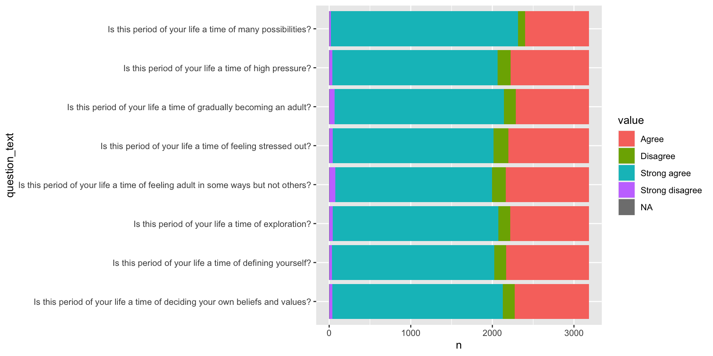IDEA Questions (IX)
We need to use fct_relevel() to set the canonical order of the factor:
Which part of the chart do we need to target to change the order of the fill colours?
Which part of the chart do we need to target to change the order of the legend?

IDEA Questions (X)
order_agree_responses <- c("Strong disagree", "Disagree", "Agree", "Strong agree")
idea_responses_clean %>%
drop_na(value) %>%
count(question_text, value) %>%
mutate(value = fct_relevel(value, order_agree_responses)) %>%
ggplot(aes(x = n,
y = question_text,
fill = value)) +
geom_col() +
scale_fill_discrete(direction = -1) +
guides(fill = guide_legend(reverse = TRUE))📖 Exercise: Social media questions
SLIDE 1 OF 1
Follow this same process to visualise the responses to the “Social media” questions in the same survey.
Let’s take 20mins for this
Please note that I’ve not created this chart myself - I’ll run through the same process later during this week’s material.
📝 Task: Obtain Commercial Access to Health Data
SLIDE 1 OF 2
Register for a FREE UK Data Service account - beta.ukdataservice.ac.uk/myaccount/login
Navigate to the access data page for the dataset - beta.ukdataservice.ac.uk/datacatalogue/studies/study?id=8049
Download the SPSS dataset
It’s very useful to learn how to deal with SPSS datasets now
- Unzip the dataset and add the folder to the data folder in your RStudio project
📝 Task: Obtain Commercial Access to Health Data
SLIDE 2 OF 2
Open up the
commercial-access-to-health-data.RmdRMarkdown documentLoad the
{haven}and{tidyverse}package
Read in the dataset (it has a really long file path!)
Tibbles are great (I)
We’ve seen before that tibbles are augmented data.frame - they can have additional attributes and print more prettily.
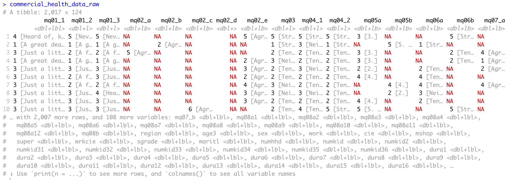Tibbles are great (II)
The {haven} package creates a special “labelled” column class which contains:
The question label
The question values
The question value labels
This is slightly confusing, but important:
singular “label” means the question text (or a shortened version of it).
plural “labels” means the question response label.
Extracting the question label from {haven} output (I)
We have two different ways to extract labels from {haven} output
- Programming with purrr::attr_getter()
- Using sjlabelled::get_label()
Unfortunately, the programming solution only works if all columns are labelled.
I’d recommend using the {sjlabelled} package exclusively for extracting question labels from SPSS. It does provide more tools but they’re not compatible with {haven} and also cause conflicts.
Extracting the question label from {haven} output (II)
The sjlabelled::get_label() function generates a named list. We can convert this into a tibble with enframe()
commercial_health_data_qs_raw <- sjlabelled::get_label(commercial_health_data_raw) %>%
enframe() %>%
rename(question_text = value)
commercial_health_data_qs_raw# A tibble: 124 × 2
name question_text
<chr> <chr>
1 mq01_1 MQ01_1 - Health data collected from patients in hospitals and GP prac…
2 mq01_2 MQ01_2 - Health data collected from patients in hospitals and GP prac…
3 mq01_3 MQ01_3 - Health data collected from patients in hospitals and GP prac…
4 mq02_a MQ02_A - As you may know, the NHS and other health services collect d…
5 mq02_b MQ02_B - As you may know, the NHS and other health services collect d…
6 mq02_c MQ02_C - As you may know, the NHS and other health services collect d…
7 mq02_d MQ02_D - As you may know, the NHS and other health services collect d…
8 mq02_e MQ02_E - As you may know, the NHS and other health services collect d…
9 mq03 MQ03 - To what extent, if at all, would you support your health data …
10 mq04_1 MQ04_1 - To what extent do you agree or disagree with the following s…
# … with 114 more rowsCan you help me write some code to remove the question label from the value column?
Extracting the question label from {haven} output (II)
This is one of many ways to tidy up this data:
commercial_health_data_qs <- commercial_health_data_qs_raw %>%
mutate(question_text = str_remove(question_text, toupper(name)),
question_text = str_remove(question_text, " - "),
question_text = str_remove(question_text, "MQ08A"))
commercial_health_data_qs# A tibble: 124 × 2
name question_text
<chr> <chr>
1 mq01_1 Health data collected from patients in hospitals and GP practices can…
2 mq01_2 Health data collected from patients in hospitals and GP practices can…
3 mq01_3 Health data collected from patients in hospitals and GP practices can…
4 mq02_a As you may know, the NHS and other health services collect data about…
5 mq02_b As you may know, the NHS and other health services collect data about…
6 mq02_c As you may know, the NHS and other health services collect data about…
7 mq02_d As you may know, the NHS and other health services collect data about…
8 mq02_e As you may know, the NHS and other health services collect data about…
9 mq03 To what extent, if at all, would you support your health data being a…
10 mq04_1 To what extent do you agree or disagree with the following statements?
# … with 114 more rowsConverting labelled columns to factors
To convert all labelled columns to factors we can use across()
commercial_health_data_factors <- commercial_health_data_raw %>%
mutate(across(where(is.labelled), ~as_factor(.x)))
commercial_health_data_factors# A tibble: 2,017 × 124
mq01_1 mq01_2 mq01_3 mq02_a mq02_b mq02_c mq02_d mq02_e mq03 mq04_1 mq04_2
<fct> <fct> <fct> <fct> <fct> <fct> <fct> <fct> <fct> <fct> <fct>
1 Heard o… Never… Never… <NA> <NA> <NA> <NA> Agree… Stro… Stron… Stron…
2 A great… A gre… A gre… <NA> Agree… <NA> <NA> <NA> Stro… Neith… Stron…
3 Just a … A fai… A fai… Agree… <NA> <NA> <NA> <NA> Tend… Tend … Tend …
4 A great… A gre… A gre… <NA> <NA> <NA> <NA> Agree… Neit… Tend … Tend …
5 Just a … Just … Just … <NA> <NA> <NA> <NA> Agree… Tend… Neith… Tend …
6 Just a … A fai… Just … <NA> <NA> <NA> <NA> Agree… Tend… Tend … Tend …
7 Just a … A fai… A fai… <NA> <NA> <NA> <NA> Agree… Neit… Tend … Tend …
8 Just a … Just … Heard… <NA> <NA> <NA> <NA> Agree… Neit… Neith… Tend …
9 Just a … Just … Just … <NA> <NA> <NA> <NA> Agree… Tend… Tend … Tend …
10 Just a … Just … Just … <NA> <NA> Agree… <NA> <NA> Tend… Tend … Stron…
# … with 2,007 more rows, and 113 more variables: mq05a <fct>, mq05b <fct>,
# mq06a <fct>, mq06b <fct>, mq07_a <fct>, mq07_b <fct>, mq08a1 <fct>,
# mq08a2 <fct>, mq08a3 <fct>, mq08a4 <fct>, mq08a5 <fct>, mq08a6 <fct>,
# mq08a7 <fct>, mq08a8 <fct>, mq08a9 <fct>, mq08a10 <fct>, mq08a11 <fct>,
# mq08a12 <fct>, mq08b <fct>, region <fct>, age3 <fct>, sex <fct>,
# work <fct>, cie <fct>, mshop <fct>, super <fct>, wrkcie <fct>,
# sgrade <fct>, maritl <fct>, numhhd <fct>, numkid <fct>, numkid2 <fct>, …Notice how we don’t have a respondent ID column?
Add respondent ID
The row_number() function gives us a neat way to add a respondent ID.
However, it’s not necessarily that clever a solution in terms of anonymisation.
commercial_health_data_clean <- commercial_health_data_factors %>%
mutate(respondent_id = row_number()) %>%
relocate(respondent_id)
commercial_health_data_clean# A tibble: 2,017 × 125
respon…¹ mq01_1 mq01_2 mq01_3 mq02_a mq02_b mq02_c mq02_d mq02_e mq03 mq04_1
<int> <fct> <fct> <fct> <fct> <fct> <fct> <fct> <fct> <fct> <fct>
1 1 Heard… Never… Never… <NA> <NA> <NA> <NA> Agree… Stro… Stron…
2 2 A gre… A gre… A gre… <NA> Agree… <NA> <NA> <NA> Stro… Neith…
3 3 Just … A fai… A fai… Agree… <NA> <NA> <NA> <NA> Tend… Tend …
4 4 A gre… A gre… A gre… <NA> <NA> <NA> <NA> Agree… Neit… Tend …
5 5 Just … Just … Just … <NA> <NA> <NA> <NA> Agree… Tend… Neith…
6 6 Just … A fai… Just … <NA> <NA> <NA> <NA> Agree… Tend… Tend …
7 7 Just … A fai… A fai… <NA> <NA> <NA> <NA> Agree… Neit… Tend …
8 8 Just … Just … Heard… <NA> <NA> <NA> <NA> Agree… Neit… Neith…
9 9 Just … Just … Just … <NA> <NA> <NA> <NA> Agree… Tend… Tend …
10 10 Just … Just … Just … <NA> <NA> Agree… <NA> <NA> Tend… Tend …
# … with 2,007 more rows, 114 more variables: mq04_2 <fct>, mq05a <fct>,
# mq05b <fct>, mq06a <fct>, mq06b <fct>, mq07_a <fct>, mq07_b <fct>,
# mq08a1 <fct>, mq08a2 <fct>, mq08a3 <fct>, mq08a4 <fct>, mq08a5 <fct>,
# mq08a6 <fct>, mq08a7 <fct>, mq08a8 <fct>, mq08a9 <fct>, mq08a10 <fct>,
# mq08a11 <fct>, mq08a12 <fct>, mq08b <fct>, region <fct>, age3 <fct>,
# sex <fct>, work <fct>, cie <fct>, mshop <fct>, super <fct>, wrkcie <fct>,
# sgrade <fct>, maritl <fct>, numhhd <fct>, numkid <fct>, numkid2 <fct>, …Commercial Health Data Survey Q4 (I)
I’d like you to extract the columns from the survey data that correspond
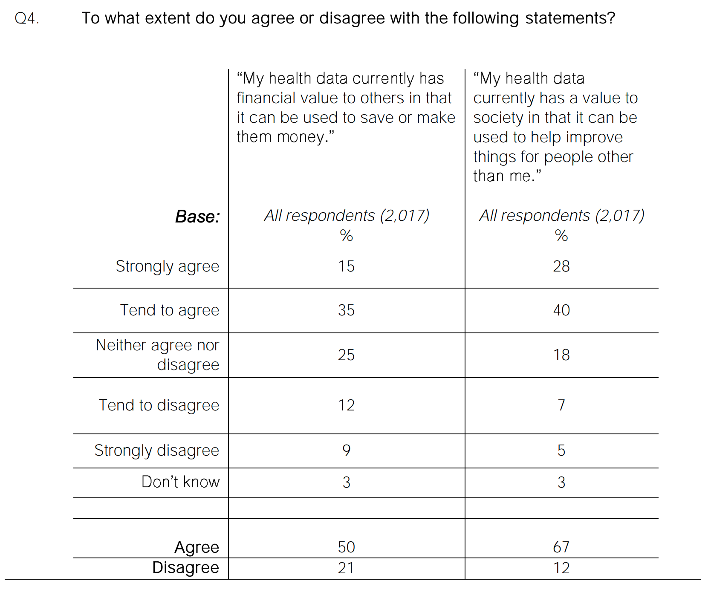Commercial Health Data Survey Q4 (II)
What do we need to do to this data so that we can tally responses and visualise it with {ggplot2}?
# A tibble: 2,017 × 3
respondent_id mq04_1 mq04_2
<int> <fct> <fct>
1 1 Strongly disagree Strongly disagree
2 2 Neither agree nor disagree Strongly agree
3 3 Tend to agree Tend to agree
4 4 Tend to agree Tend to agree
5 5 Neither agree nor disagree Tend to agree
6 6 Tend to agree Tend to agree
7 7 Tend to agree Tend to agree
8 8 Neither agree nor disagree Tend to agree
9 9 Tend to agree Tend to agree
10 10 Tend to disagree Strongly disagree
# … with 2,007 more rowsCommercial Health Data Survey Q4 (III)
Let’s make this chart:

How wide is too wide?
Buffy ratings
In what ways is this dataset wide?
Ratings are split across multiple columns
Should we include
vox ep rankin ratings?!In principle we could combine:
- votes
- views
- vox ep rank
# A tibble: 144 × 15
no overal…¹ season no in…² title direc…³ writer air_d…⁴ views…⁵ imdb_…⁶ votes
<dbl> <dbl> <dbl> <chr> <chr> <chr> <chr> <dbl> <dbl> <dbl>
1 1 1 1 Welc… Charle… Joss … 3/10/1… 4.59 8 4548
2 2 1 2 The … John T… Joss … 3/10/1… 4.59 7.8 3952
3 3 1 3 Witch Stephe… Dana … 3/17/1… 4.63 7.7 3940
4 4 1 4 Teac… Bruce … David… 3/24/1… 2.98 6.9 3800
5 5 1 5 Neve… David … Rob D… 3/31/1… 4.09 7.4 3611
6 6 1 6 The … Bruce … Matt … 4/7/19… 3.42 7.4 3770
7 7 1 7 Angel Scott … David… 4/14/1… 3.39 8.5 3918
8 8 1 8 I, R… Stephe… Ashle… 4/28/1… 2.47 6.7 3629
9 9 1 9 The … Ellen … Rob D… 5/5/19… 2.56 7.7 3666
10 10 1 10 Nigh… Bruce … Joss … 5/12/1… 3.47 8.2 3614
# … with 134 more rows, 5 more variables: plot <chr>, runtime <dbl>,
# deathcount <dbl>, `neilsen rating` <chr>, `vox ep rank` <dbl>, and
# abbreviated variable names ¹`no overall`, ²`no in season`, ³director,
# ⁴air_date, ⁵views_mil, ⁶imdb_ratingLong enough for what you need
Tidy data is a useful concept for wrangling, modelling and data visualisation4.
But it’s not something to conform to religiously.
You might want to keep some width to your data to make it easy to quickly view.
Wide data might also be more appropriate if visualising your data with tables.
Other forms of untidy data
Multiple pieces of data in one cell
Sometimes a single column contains multiple variables.
This is often the case in poorly designed “where do you live?” questions:
You might also ask respondents to “select all that apply”
device_ownership <- tribble(
~name, ~devices_owned,
"Charlie", "Smart TV, Cell phone",
"Mohammad", "Cell phone",
"Christina", "Smart TV, Games Console, Cell phone"
)
device_ownership# A tibble: 3 × 2
name devices_owned
<chr> <chr>
1 Charlie Smart TV, Cell phone
2 Mohammad Cell phone
3 Christina Smart TV, Games Console, Cell phone📝 Task: Obtain British Election Survey Data
SLIDE 1 OF 2
Register for a FREE British Election Survey Data account - britishelectionstudy.com/wp-login.php?action=register
Navigate to the access data page for the dataset - britishelectionstudy.com/data-object/2019-british-election-study-post-election-random-probability-survey/
Download the SPSS dataset
Unzip the dataset and add the folder to the data folder in your RStudio project
📝 Task: Obtain British Election Survey Data
SLIDE 2 OF 2
Setup the british-election-survey.Rmd for data wrangling
Read in the SPSS file
# A tibble: 3,946 × 415
finalser…¹ agency Y10A Y10B1 Y10B2 Y10B3 Y10B4 Y10B5 a01
<dbl> <dbl+lb> <dbl> <dbl+lb> <dbl+l> <dbl+l> <dbl+l> <dbl+l> <chr+lbl>
1 10102 1 [Ips… NA NA NA NA NA NA "-2" [Ref…
2 10103 NA 2 1 [Yes] 0 [No] 0 [No] 0 [No] 0 [No] ""
3 10105 NA 2 1 [Yes] 0 [No] 0 [No] 0 [No] 0 [No] ""
4 10110 1 [Ips… NA NA NA NA NA NA "-1" [Don…
5 10111 1 [Ips… NA NA NA NA NA NA "-1" [Don…
6 10202 NA 2 1 [Yes] 0 [No] 0 [No] 0 [No] 0 [No] ""
7 10206 NA 3 1 [Yes] 0 [No] 0 [No] 0 [No] 0 [No] ""
8 10208 NA 2 1 [Yes] 0 [No] 0 [No] 0 [No] 0 [No] ""
9 10210 NA 2 1 [Yes] 0 [No] 0 [No] 0 [No] 0 [No] ""
10 10304 NA 2 1 [Yes] 0 [No] 0 [No] 0 [No] 0 [No] ""
# … with 3,936 more rows, 406 more variables: a01_code <dbl+lbl>,
# a02 <dbl+lbl>, a03 <dbl+lbl>, m02_1 <dbl+lbl>, m02_2 <dbl+lbl>,
# m02_3 <dbl+lbl>, m02_4 <dbl+lbl>, m02_5 <dbl+lbl>, m02_6 <dbl+lbl>,
# b01 <dbl+lbl>, b02 <dbl+lbl>, b04 <dbl+lbl>, b05 <dbl+lbl>,
# b0601 <dbl+lbl>, b0602 <dbl+lbl>, b0603 <dbl+lbl>, b0604 <dbl+lbl>,
# b0605 <dbl+lbl>, b0606 <dbl+lbl>, b0607 <dbl+lbl>, b0608 <dbl+lbl>,
# b0609 <dbl+lbl>, b0610 <dbl+lbl>, b0611 <dbl+lbl>, b0612 <dbl+lbl>, …Use
{sjlabelled}to extract the question text from the dataUse
across()convert labelled columns to factors.
Where do people get their information from?
Can you extract the column(s) from the dataset corresponding to this question?
What can you tell me about this data and question?
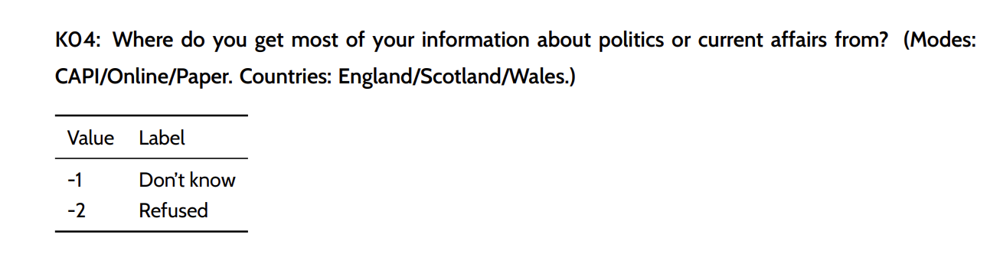
Where do people get their information from?
This is an open-ended question that’s going to be really messy to handle.
To properly analyse this we might need to use the {tidytext} package for text mining with a tidyverse approach.
But let’s see what we can do by pretending it’s multiple choice data and using
separate() … ?
separate_rows() … ?
# A tibble: 3,946 × 2
finalserialno k04
<dbl> <chr+lbl>
1 10102 "family"
2 10103 "-2" [Refused]
3 10105 "Media- cross referencing and watching parliamentary debates"
4 10110 "parents"
5 10111 "tv radio"
6 10202 ""
7 10206 "News, internet and conversation"
8 10208 ""
9 10210 "Mail on line \nNews on tv"
10 10304 "t v . papers. radio."
# … with 3,936 more rows